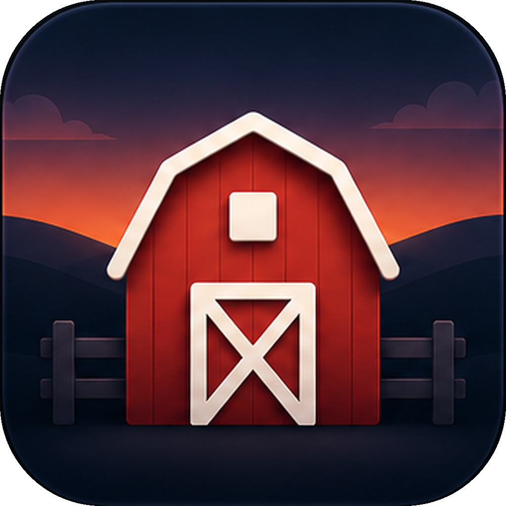

Corral
Snap your Mac windows into place, from the keyboard or the menu bar.
Download for macOSRequires macOS 14 (Sonoma) or later. Free.
- Global hotkeys snap the focused window to halves, thirds, two-thirds, maximize, or center.
- Shortcuts map to arbitrary screen fractions, fully decoupled from the grid size.
- A configurable grid with a live full-screen preview.
- Menu bar actions for every binding, multi-display aware.
- Automatic updates.
Support
Corral is free and fully functional. Donations are entirely optional, one-time, and unlock nothing; they just support development. If it earns its keep, buy me a:
Coffee Beer DinnerDonations are voluntary and non-refundable. Questions or a problem with a payment? Email stephen@corralapp.org and I'll make it right.